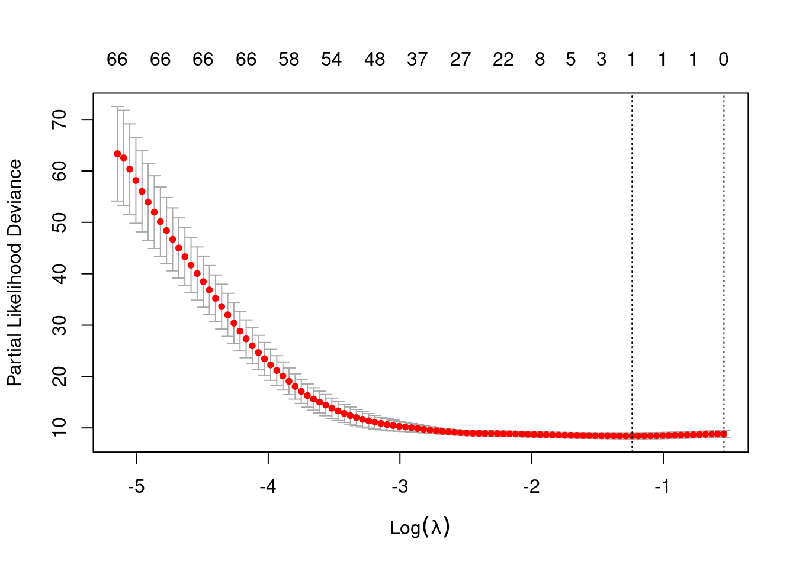
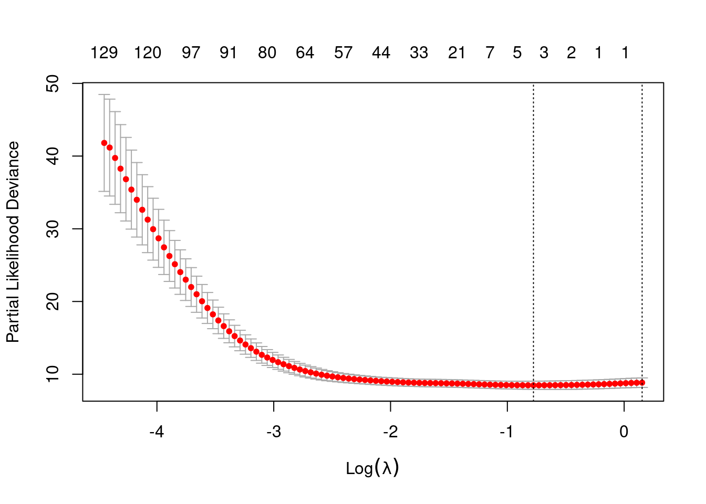

library(survival)
library(glmnet)
library(tibble)
library(dplyr)Cox regression (high-dim)
In this exercise, we will use data for \(115\) Norwegian women with breast cancer. For each of the women, we have gene expression measurements for \(549\) «intrinsic genes» and information on the time to breast cancer death or censoring. (Source: Sørlie et al. Proc. Natl Acad. Sci. USA, 2003.)
We will use penalized Cox regression to investigate if the gene expressions have predictive power for survival and try to identify which genes are of importance.
You may read the data into R by the command:
brcancer=read.table("https://www.med.uio.no/imb/english/research/centres/ocbe/courses/imb9335/norw-breast-cancer.txt")Before we analyse the data, we will define 10 folds that may be used in the cross-validation (to ensure – for pedagogical reasons - that all students get the same results). We do this by the commands
set.seed(33575)
ind=sample(1:115,115)
brcancer=brcancer[ind,]
fold=rep(1:10,length.out=115)We extract the (censored) survival times, the censoring/death statuses and the gene expressions by the commands
time=brcancer[,1]
status=brcancer[,2]
geneexpr=as.matrix(brcancer[,-(1:2)])Censoring problems with the folds?
sum(status == 0)/length(status)[1] 0.6695652status[fold == 5] [1] 0 0 0 0 0 1 0 0 0 0 0 0We may then do a Cox-lasso regression with 10-fold cross-validation and plot the cross-validation curve by the commands (you need to load the survival and glmnet-packages)
cox.lasso=cv.glmnet(geneexpr,Surv(time,status),family="cox",foldid=fold, standardize=FALSE)
plot(cox.lasso)
cox.lasso$lambda.min[1] 0.2902299log(cox.lasso$lambda.min)[1] -1.237082min(cox.lasso$cvm)[1] 8.45301- Perform the commands and interpret the cross-validation plot.
We may use the following commands to obtain a list of the genes that obtain an estimate that differ from zero (i.e. the selected genes):
coefficients=coef(cox.lasso, s=cox.lasso$lambda.min)
active.index=which(coefficients != 0)
active.coefficients=coefficients[active.index]
covarno=predict(cox.lasso, s=cox.lasso$lambda.min,type="nonzero")
cbind(covarno,active.coefficients) which active.coefficients
1 356 -0.1720938Repeat a number of times and see how the number of genes and the list of selected genes vary from splits to splits:
n = 25
dl = list()
for(i in 1:n) {
# message(i)
cox.lasso = cv.glmnet(geneexpr,Surv(time,status),family="cox",nfolds=10, standardize=FALSE)
coef_tbl = coef(cox.lasso, s = 'lambda.min') %>% # s = 'lambda.' different
as.matrix() %>%
as.data.frame() %>%
tibble::rownames_to_column(var = 'coef_name') %>%
dplyr::rename(value = `1`) %>%
filter(value != 0)
dl[[i]] = coef_tbl
}
res = dplyr::bind_rows(dl)res %>%
group_by(coef_name) %>%
summarise(mean_coef = mean(value), ntimes=n()) %>%
arrange(desc(ntimes))# A tibble: 5 × 3
coef_name mean_coef ntimes
<chr> <dbl> <int>
1 V358 -0.174 25
2 V23 -0.0384 18
3 V200 -0.0193 6
4 V271 -0.00971 3
5 V233 0.00290 1Finally, if time allows, you may try out the elastic net. You may fit a Cox elastic net (with alpha=0.5) for the original split into 10 folds by the command:
cox.net=cv.glmnet(geneexpr,Surv(time,status),family="cox",alpha=0.5,foldid=fold, standardize=FALSE)
plot(cox.net)
- Perform the command and see how many and which genes are selected.